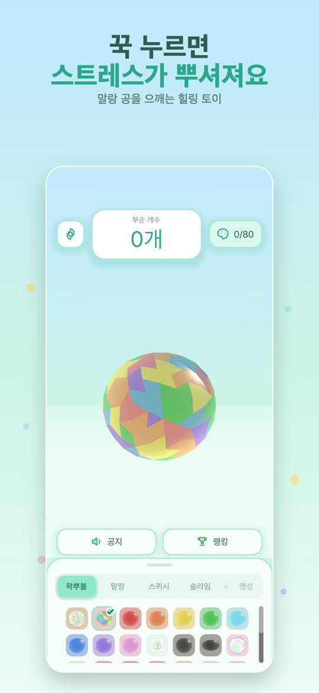
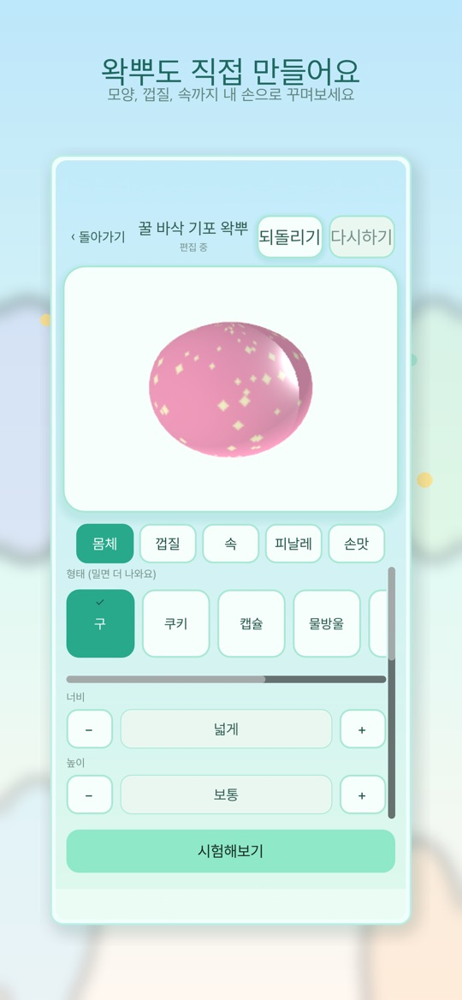
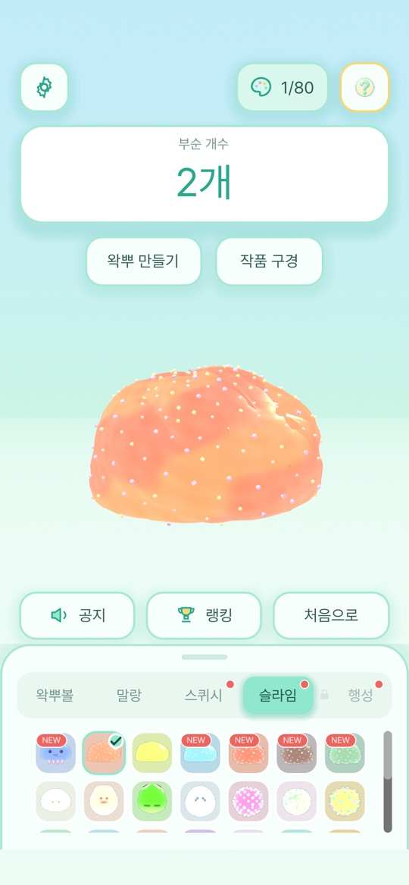

겉은 바삭하고 속은 말랑한 공을 꾹 누르고, 굴리고, 껍질이 깨질 때까지 부수는 촉감형 힐링 토이입니다. 손맛을 즐기면서 부술 때마다 숨겨진 색을 모아 80색 도감을 채웁니다.
게임의 기본 흐름
- 아래쪽 목록에서 공을 고릅니다. 탭은 왁뿌볼·말랑·스퀴시·슬라임·행성으로 나뉘고, 종류마다 말랑·슬라임·스퀴시·바삭 같은 촉감과 소리가 다릅니다.
- 공을 꾹 누르면 으깨지고, 계속 누르면 껍질이 ‘빠자작’ 깨집니다. 화면 위쪽의 부순 개수가 올라갑니다.
- 미스터리 왁뿌볼을 부수면 숨겨진 색이 확률에 따라 자동으로 모입니다. 추가 결제 없이 모이며, 확률은 앱 안의 ‘획득 확률’에서 볼 수 있습니다.
- 버전 1.5부터는 공방에서 나만의 왁뿌를 만들고, 광장에서 다른 사람의 작품을 눌러 보거나 내 작품을 공개할 수 있습니다.
조작
- 꾹 누르기: 손가락을 공 위에 대고 잠깐 가만히 있으면 그 자리가 눌립니다. 계속 누르면 껍질에 금이 가고 깨집니다.
- 굴리기: 손가락을 누른 채 움직이면 공이 빙글빙글 돕니다. 손을 떼면 남은 힘으로 조금 더 돕니다.
- 설정: 소리와 음량, 진동과 진동 세기, 무한 왁뿌볼 모드, 언어를 바꿀 수 있습니다.
- 도감: 모은 색을 누르면 그 색으로 공을 부술 수 있습니다.
처음 시작하기
- 아래 스토어 링크에서 설치합니다. 앱 안에 광고는 없습니다.
- 기본 왁뿌볼 하나를 골라 꾹 누르기와 굴리기를 번갈아 해 보며 차이를 익힙니다.
- 미스터리 왁뿌볼을 몇 개 부숴 색 도감(화면 오른쪽 위 0/80 표시)이 채워지는 것을 확인합니다.
- 말랑·스퀴시·슬라임 탭으로 바꿔 촉감과 소리를 비교합니다.
- 공방에서 첫 작품을 만들어 시험해 보고, 마음에 들면 광장에 공개합니다.
초보자를 위한 참고 팁
아래는 앱 화면 안내를 바탕으로 한 제안입니다. 손맛은 기기의 진동 성능과 화면 크기에 따라 다르게 느껴질 수 있습니다.
- 소리가 안 나면 무음 모드부터. 휴대폰의 무음 모드를 해제하고, 메뉴에서 사운드가 켜져 있는지 확인하세요.
- 조용한 곳에서는 진동 세기를 낮추세요. 설정에서 진동을 끄거나 세기를 조절할 수 있습니다.
- 누르기와 굴리기를 구분하세요. 깨뜨리고 싶을 때는 손가락을 움직이지 말고 한자리를 누르고 있는 편이 낫습니다. 손가락이 움직이면 굴리기로 처리됩니다.
- 천천히 끝까지 깨 보지 않아도 됩니다. 끝이 나지 않는 손맛을 원하면 설정의 무한 왁뿌볼 모드를 켜 보세요.
- 공방에서는 재질부터. 몸체·껍질·속·피날레·손맛 탭 가운데 먼저 재질을 골라야 시험해 볼 수 있습니다. ‘시험해보기’로 직접 깨 본 다음 완성하세요.
- 행성 탭은 도감을 다 채우면 열립니다. 미스터리 색 80가지를 모두 모으면 행성 왁뿌볼을 부술 수 있습니다.
스크린샷
App Store 한국 스토어에 게시된 공식 스크린샷입니다(버전 1.5.1 기준, 홍보 문구 포함).



자주 묻는 질문
- 광고가 나오나요?
- App Store와 Google Play 설명 모두 광고 없는 버전이라고 밝히고 있습니다. App Store에서는 유료 앱이며, 가격은 지역과 시점에 따라 다르므로 스토어에서 확인해 주세요.
- 색 도감을 채우려면 결제가 필요한가요?
- 아닙니다. 공을 부수면 확률에 따라 색이 자동으로 모이며, 앱 안에서 무료·결제 없음으로 안내합니다.
- 랭킹은 무엇을 겨루나요?
- 부순 개수로 순위를 매기며, 전체 누적과 오늘 기록이 표시됩니다. 랭킹에 오르려면 최대 12자의 닉네임을 등록합니다.
- 광장에서 하트를 누를 수 없어요.
- 하트를 보내려면 닉네임이 필요합니다. 1.5.1부터는 닉네임이 없을 때 그 자리에서 만들 수 있습니다. 작품을 공개하려면 커뮤니티 규칙 동의가 필요하며, 광장은 운영 사정으로 잠시 닫힐 수 있습니다(공방은 계속 이용 가능).
- 영어 이름이 여러 가지인 이유는요?
- 이 웹사이트는 Wakbu Ball로 표기하고, 앱과 App Store는 Wakppu라는 영어 이름을 씁니다. 모두 같은 게임입니다.
- 버그는 어떻게 알리나요?
- 화면 녹화나 캡처를 ricecookey.help@gmail.com으로 보내 주세요. 기기 모델, OS 버전, 앱 버전을 함께 적어 주시면 확인이 빠릅니다.
스토어 링크
광고 없는 버전
iOS 15.0 이상(App Store 기준), 연령 등급 4+(App Store). 원스토어의 버전과 판매 조건은 이 페이지에서 확인하지 못했습니다.
문의
질문, 요청, 버그 제보: ricecookey.help@gmail.com
참고 자료와 확인 범위
- App Store 페이지 — 버전 1.5.1(2026년 8월 18일 배포), 설명·업데이트 내용·스크린샷
- Google Play 페이지 — 2026년 8월 18일 업데이트, 공방(직접 만들기)과 광고 없는 버전 안내
- 원스토어 페이지 — 판매 페이지 존재만 확인
- 개발 기록: 손끝의 빠자작을 화면 안으로
조작, 메뉴 이름, 해금 조건은 2026년 10월 20일에 확인한 앱 화면 문구와 스토어 설명을 따랐습니다. 업데이트로 달라질 수 있으며, 앱 안의 표시가 이 페이지보다 우선합니다.
English
Wakbu Ball is a tactile healing toy: press, roll and crack balls with a crispy shell and a soft center. Every break can reveal a hidden color for your 80-color Dex.
How it works
- Pick a ball from the list at the bottom. The tabs are Wakppu, Soft, Squishy, Slime and Planet, and each type has its own texture and sound.
- Press and hold to squish the ball; keep pressing and the shell cracks. The Broken counter at the top goes up.
- Breaking Mystery Wakppus collects hidden colors automatically, by published odds. No payment is involved, and the odds are listed under “Drop Rates” in the app.
- Since version 1.5 you can build your own ball in the Workshop and, in the Plaza, try other players' creations or publish yours.
Controls
- Press and hold: keep your finger still on the ball for a moment and that spot squishes in. Keep holding and the shell cracks and breaks.
- Roll: move your finger while touching and the ball spins. Let go and it keeps spinning briefly.
- Settings: sound and volume, vibration and vibration intensity, Endless Mode, and language.
- Dex: tap a collected color to smash balls in that color.
Getting started
- Install from the store links below. There are no ads in the app.
- Pick a basic Wakppu and alternate between holding and rolling to feel the difference.
- Break a few Mystery Wakppus and watch the color Dex (the 0/80 counter at the top right) fill up.
- Switch to the Soft, Squishy and Slime tabs to compare textures and sounds.
- Make your first creation in the Workshop, test it, and publish it to the Plaza if you like it.
Beginner tips
These suggestions are based on the in-app guidance. How the feedback feels depends on your device's vibration hardware and screen size.
- No sound? Check silent mode first. Turn off your phone's silent mode and make sure Sound is on in the menu.
- Lower the vibration in quiet places. Settings lets you turn vibration off or change its intensity.
- Keep holding and rolling separate. To crack a ball, hold one spot without moving; once your finger moves, the game treats it as a roll.
- You do not have to finish every ball. If you want squishing that never ends, turn on Endless Mode in Settings.
- In the Workshop, choose a material first. Among the Body, Shell, Core, Finale and Feel tabs, a material has to be selected before you can test. Use “Test It” to break your ball yourself, then complete it.
- The Planet tab opens with a full Dex. Collect all 80 mystery colors to unlock Planet Wakppus.
Screenshots
Official screenshots from the Korean App Store listing (version 1.5.1, including promotional captions, Korean UI).
FAQ
- Are there ads?
- Both the App Store and Google Play descriptions describe it as ad-free. It is a paid app on the App Store; prices vary by region and over time, so check the store.
- Do I need to pay to fill the color Dex?
- No. Colors are collected automatically by the listed odds when you break a ball, and the app states that this is free with no purchase.
- What does the ranking measure?
- How many balls you have broken, shown as all-time and today. To appear on it, register a nickname of up to 12 characters.
- I can't send a heart in the Plaza.
- Hearts need a nickname; since 1.5.1 you can create one on the spot. Publishing requires agreeing to the community rules, and the Plaza may close temporarily for operational reasons (the Workshop stays open).
- Why are there different English names?
- This website uses Wakbu Ball, while the app and the App Store use the English name Wakppu. They are the same game.
- How do I report a bug?
- Send a screen recording or screenshot to ricecookey.help@gmail.com. Including your device model, OS version and app version speeds things up.
Store links
Ad-free edition
Requires iOS 15.0 or later (App Store), rated 4+ (App Store). The ONE Store version and pricing were not checked for this page.
Contact
Questions, requests and bug reports: ricecookey.help@gmail.com
References and scope
- App Store listing — version 1.5.1 (released August 18, 2026), description, release notes and screenshots
- Google Play listing — updated August 18, 2026; Workshop creation and ad-free notes
- ONE Store listing — listing presence only
- Development journal: Bringing the crackle to the screen
Controls, menu names and unlock conditions follow the in-app text and store listings checked on October 20, 2026. Updates may change them, and what the app shows takes precedence over this page.